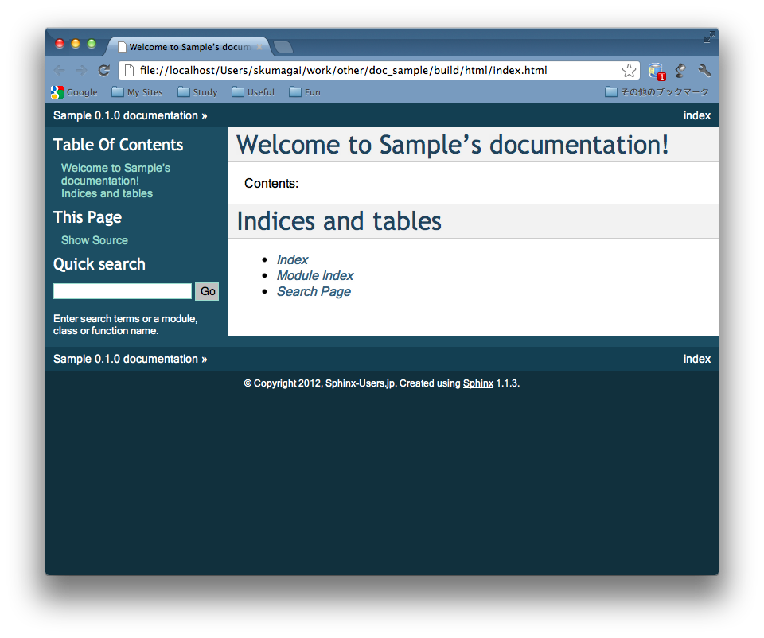
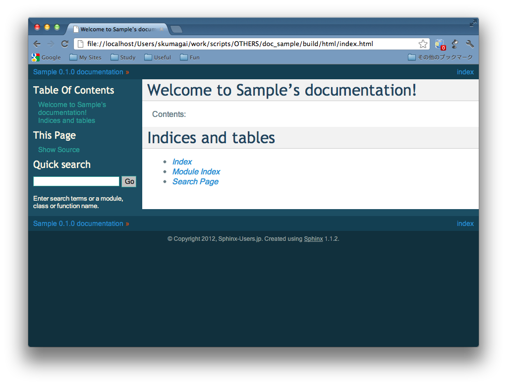
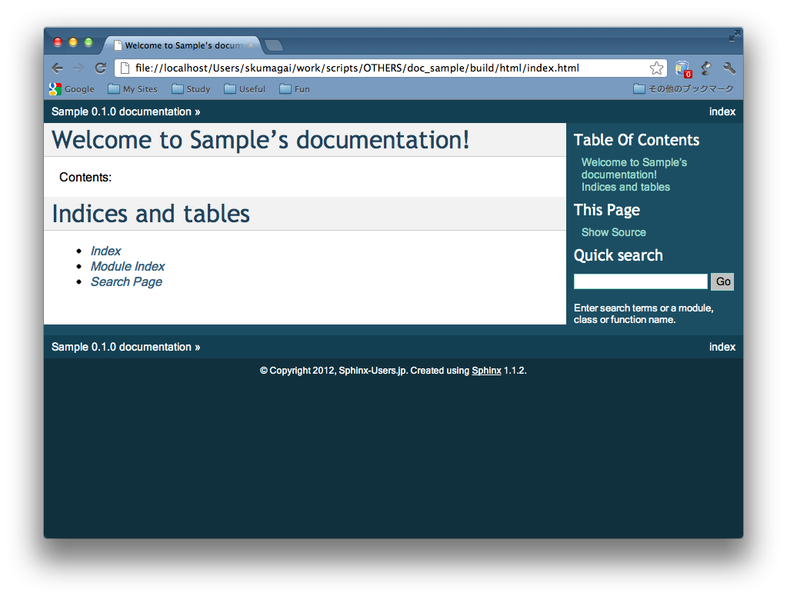
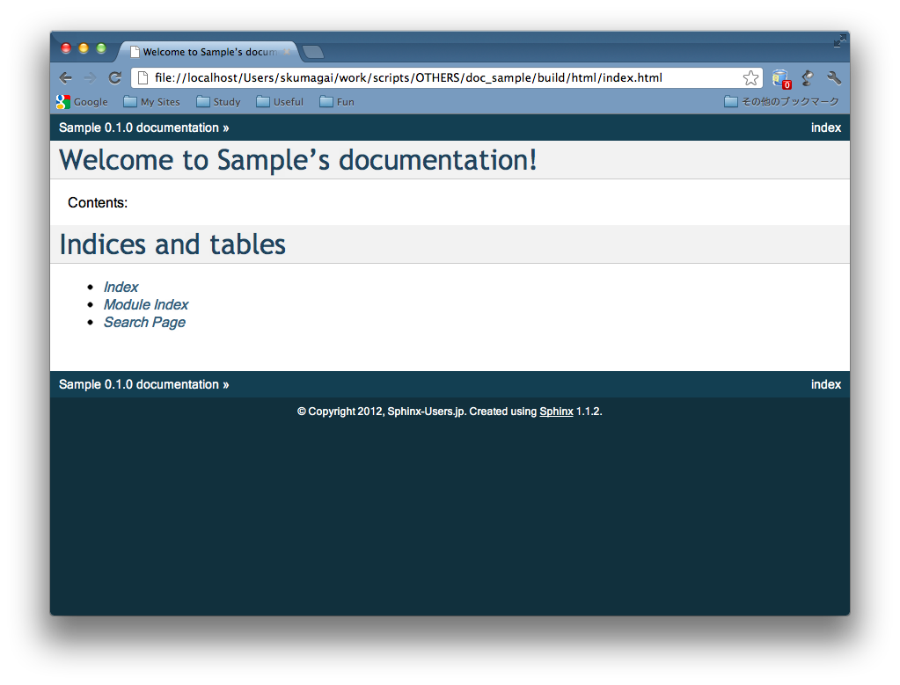

中級者編¶
さて、テーマの使い方は分かった。
で、こんな場合はどうすれば？？
ここ だけ
背景色を変えたい！！
Before ...
After ...

# The theme to use for HTML and HTML Help pages.
# See the documentation for a list of builtin themes.
html_theme = 'default'
# Theme options are theme-specific and customize the look
# and feel of a theme further.
# For a list of options available for each theme, see the
# documentation.
html_theme_options = {
"bgcolor": "#fdf6e3",
"sidebarbgcolor": "#eee8d5",
"relbarbgcolor": "#93a1a1",
"footerbgcolor": "#fdf6e3",
}
- テキスト・リンクの色を変えたい
Before ...
After ...
# The theme to use for HTML and HTML Help pages.
# See the documentation for a list of builtin themes.
html_theme = 'default'
# Theme options are theme-specific and customize the look
# and feel of a theme further.
# For a list of options available for each theme, see the
# documentation.
html_theme_options = {
"linkcolor": "#268bd2",
"textcolor": "#657b83",
"sidebarlinkcolor": "#2aa198",
"sidebartextcolor": "#fdf6e3",
"relbarlinkcolor": "#268bd2",
"relbartextcolor": "#cb4b16",
"footertextcolor": "#93a1a1",
}
- サイドバーを右側にしたい
Before ...
After ...
# The theme to use for HTML and HTML Help pages.
# See the documentation for a list of builtin themes.
html_theme = 'default'
# Theme options are theme-specific and customize the look
# and feel of a theme further.
# For a list of options available for each theme, see the
# documentation.
html_theme_options = {
"rightsidebar": True,
}
- サイドバーを隠したい
Before ...
After ...
# The theme to use for HTML and HTML Help pages.
# See the documentation for a list of builtin themes.
html_theme = 'default'
# Theme options are theme-specific and customize the look
# and feel of a theme further.
# For a list of options available for each theme, see the
# documentation.
html_theme_options = {
"nosidebar": True,
}
defaultテーマの他のオプションは？
nosidebar footerbgcolor bgcolor
sidebarwidth footertextcolor textcolor
rightsidebar sidebarbgcolor linkcolor
stickysidebar sidebarbtncolor visitedlinkcolor
collapsiblesidebar sidebartextcolor headbgcolor
externalrefs sidebarlinkcolor headtextcolor
relbarbgcolor codebgcolor
bodyfont relbartextcolor codetextcolor
headfont relbarlinkcolor